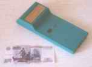
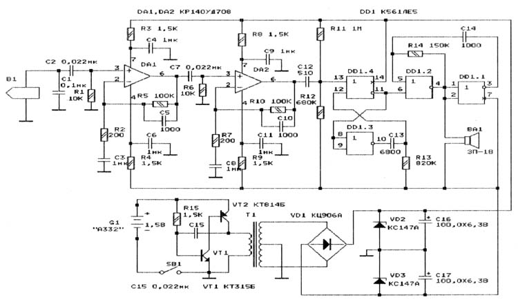
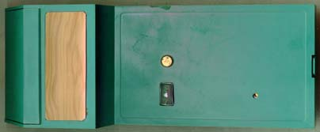
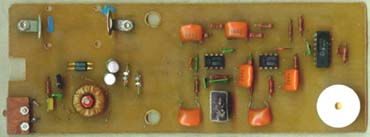

Детектор магнитных меток

Введение
Добавление магнитных частиц, например, оксида железа, в чернила и краски позволяет создать дополнительную степень защиты банкнот и других ценных бумаг, находящихся в обращении, от подделки. Нанесение магнитных меток по принципу штрих-кода дает возможность автоматизировать чтение номинала купюры. Обратной стороной достаточной простоты этой технологии является возможность подделки магнитных меток с помощью оборудования, имеющегося в свободной продаже (компьютер и принтер), или даже вручную. Магнитные поля, создаваемые подобными метками, по величине меньше магнитного поля Земли, поэтому для их обнаружения нужны соответствующие датчики, такие как индукционные магнитные головки или датчики на основе гигантского магниторезистивного эффекта (ГМР-датчики). Технология использования индукционных магнитных головок хорошо разработана применительно к сфере звуковоспроизведения с помощью магнитных носителей (магнитофоны). Для уверенного обнаружения магнитной метки магнитная головка должна находиться в непосредственном контакте с ее носителем. В пользу применения ГМР-датчиков свидетельствует непрекращающийся прогресс в области разработки накопителей информации на жестких дисках. ГМР-датчики позволяют обнаруживать магнитные метки на значительном (несколько миллиметров) расстоянии до их носителя. В противоположность магнитным карточкам, информация, которую несут подобные метки, определяется не их намагниченностью, а структурой представляемого ими рисунка. Для уверенного их обнаружения и прочтения необходимым условием является грамотное предварительное подмагничивание. Ниже описывается конструкция устройства, предназначенного для оперативной проверки подлинности банкнот с магнитными метками.
Конструкция детектора магнитных меток
На рис. 1 приведена электрическая принципиальная схема устройства.

Рис. 1. Электрическая принципиальная схема детектора магнитных меток.
В качестве датчика магнитного поля B1 применена кольцевая индукционная магнитная головка [1] собственного изготовления. Для питания устройства используется один гальванический элемент типа А332. На транзисторах VT1, VT2 собран преобразователь однополярного напряжения 1.5 В в двухполярное 2 х 4.7 В. Сигнал с магнитной головки B1 усиливается двухкаскадным усилителем с полосовым фильтром на микросхемах DA1, DA2. Импульсы напряжения с выхода усилителя запускают одновибратор DD1.3, DD1.4, который управляет генератором DD1.1, DD1.2. К генератору подключен динамик BA1. Его звучание свидетельствует о прохождении магнитной метки над магнитной головкой.
Для предварительного подмагничивания магнитных меток использован специальный постоянный магнит цилиндрической формы.
На рис. 2 показан внешний вид детектора магнитных меток, а на рис. 3 - его печатная плата.

Рис. 2. Внешний вид детектора магнитных меток (размеры 210 х 85 х 35 мм3).

Рис. 3. Печатная плата детектора магнитных меток (размеры 180 х 70 мм2).
Способ применения
Детектор магнитных меток берется в одну руку, испытуемая купюра - в другую. Нажатием на кнопку включается питание устройства. Участок купюры, на котором предполагается существование магнитных меток, несколько раз проводится туда-сюда по поверхности магнитной головки с незначительным прижимом. Чем больше скорость прохождения магнитной метки над головкой, тем больше величина индуцированного сигнала. Звучание динамика свидетельствует о наличии магнитных меток и наоборот.
Состояние разработки:
Изготовлен и испытан опытный экземпляр детектора магнитных меток. Испытания показали уверенное обнаружение магнитных меток, имеющихся на банкнотах или созданных искусственно на бумаге, а также отсутствие ложных срабатываний при опробовании банкнот или образцов бумаги, таких меток не имеющих.
Ссылки:
31.07.2003
16.12.2004
21.06.2010
Альтернативные источники
энергии
Компьютеры и
Интернет
Магнитные поля
Механотронные системы
Перспективные
разработки
Электроника и технология